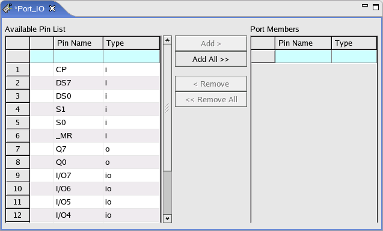

Creating a port
Before you begin
Make sure your pins are defined.
Procedure
Results
The Port Setup Editor for the new port opens. The Port Members area is blank.

What to do next
Edit the port.
Functional changes
- Introduced before SmarTest 6.3.2